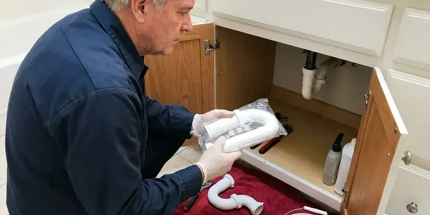

Toilet Installation in Muskogee, OK
Most base leaks start with a wax ring set on a flange that sits too low. Our plumbers in Muskogee, OK check flange height on every install.
- Flat Labor Pricing
- Licensed and Insured
- Same-Day Installs Available
- Rough-In Checked First

Book a Toilet Install in Muskogee, OK
We caulk the base, test the flush and clean up before leaving.
Toilet Installs for Your Muskogee, OK Home
JBK Plumbing treats a single powder room toilet the same as a whole-house job. We help you pick a bowl shape and seat height that fit. Stainless closet bolts and a braided supply line go on every install, since plated bolts rust tight within a few years and plastic supply lines can split at the nut. Already have the toilet? We will set that one too.
Our expertise includes:
- New wax or foam seal on every install
- WaterSense 1.28 gpf and dual-flush upgrades
- Standard and comfort-height toilet installs

Additional Bathroom Plumbing Services in Muskogee, OK
From toilets to showers, our bathroom plumbing team in Muskogee, OK repairs, installs, and replaces every fixture with clean, code-compliant work.


Customers
Why Choose JBK Plumbing for Toilet Installation in Muskogee, OK?
Slow refills and weak flushes on a brand new toilet usually trace back to the install, not the fixture. A half-open stop or a kinked supply line causes most of them. We open the stop fully, check the fill valve height against the overflow tube mark, and set the water line where the manufacturer wants it. Then we flush it, a lot.
- Level Mounting, A shimmed, steady bowl keeps its seal and does not rock when you sit.
- Correct Rough-In, We measure 10, 12 or 14 inch rough-ins from the finished wall before you buy.
- Full Testing, Five or more flushes and a dry paper towel at every joint before we go.
Citywide Coverage
We install toilets in every part of Muskogee, from older neighborhoods with cast iron drains to new subdivisions plumbed in PVC. Each needs different parts. An older house may need a repair ring or a new closet bend, and a newer one usually just needs a seal and bolts.
Experienced Team
Flange height is where experience shows. It belongs flush with the finished floor or a hair above. Spacer rings, extender kits, repair plates and thick foam seals ride on every truck, so a flange left low by new tile still seals right.
Safety-First Approach
Bolts and flanges corrode in a wet spot like the base of a toilet. Only brass or stainless goes in. Plated bolts rust in a few years, and a rusted nut turns the next swap into a hacksaw job.
Trusted Certified Muskogee Plumbing Services Professionals
At JBK Plumbing, we are proud to offer certified plumbing services throughout Muskogee, OK. Credentials matter in this trade. Our plumbers hold recognized industry credentials, and they follow strict safety and quality rules on every repair, installation and maintenance call we run.
Call Us Now PHCC Plumbing Contractor Recognition
PHCC Plumbing Contractor Recognition Better Business Bureau (BBB) Accreditation
Better Business Bureau (BBB) Accreditation Angi Certified Pro
Angi Certified Pro ISO 9001 Quality Management Certification
ISO 9001 Quality Management CertificationToilet Installation Jobs We Handle in Muskogee, OK
Wall-Mounted Toilet Installation in Muskogee
Wall-mounted toilets hang off a steel carrier bolted to the floor inside the wall. An access plate hides the tank. Because the carrier carries all the weight, we anchor its feet to the slab or framing first and check it for plumb before the drywall or tile goes up. Plan on a remodel, not a swap.

ADA-Compliant Toilet Installation in Muskogee
ADA toilets put the seat 17 to 19 inches off the floor, and the centerline sits 16 to 18 inches from the side wall. That spacing leaves room for a grab bar. Before anything is ordered we measure the drain, because shifting it to meet the ADA centerline means cutting into the floor. Elongated bowls are standard here.
Customer-Supplied Toilet Installation in Muskogee, OK
Bought the toilet yourself? First, look at the rough-in printed on the carton. We unbox it and look over the porcelain for shipping cracks before we pull your old one, since a hairline crack in the bowl or tank means it needs to go back to the store, not onto your floor. We bring the seal and stainless bolts.
Rough-In Toilet Installation in Muskogee, OK
Rough-in is the plumbing that goes in before walls and floors close up. For a toilet that means a 3 inch drain with a vent, plus a cold supply stub. The drain goes 12 inches out from the finished wall line, which means we add the drywall thickness to the framing measurement. Then the inspector sees it open.
Smart Toilet and Bidet Seat Installation in Muskogee
Bidet seats like the TOTO Washlet and Bio Bidet bolt onto most existing elongated bowls. A T-valve splits water off the fill line. Heated seats with a warm-air dryer need a nearby GFCI outlet, and when there is none we bring in an electrician first. Non-electric seats take about thirty minutes.
Commercial Flushometer Toilets in Muskogee
Sloan and Zurn flushometer valves are the standard on commercial toilets for a reason. There is no tank to refill. Manual and sensor valves go on both floor-mount and wall-hung bowls, with the control stop adjusted so the flush is full but does not splash. Sensor valves cut down on touch points.
High-Efficiency Toilet Installation in Muskogee, OK
High-efficiency toilets flush on 1.28 gallons or less, against 3.5 gallons or more for toilets from before the early 1990s. Check for the WaterSense label. We steer customers toward models with a MaP score of 800 grams or higher, because a cheap low-flow bowl that needs two flushes saves nothing. Dual-flush models add a lighter half flush.

Toilet Brands We Install in Muskogee
We install Kohler, TOTO, American Standard, Gerber and most other brands sold at supply houses and home centers. Every brand has its quirks. Some skirted TOTO models use a Unifit adapter, and certain Kohler tanks take a gasket that hardware stores rarely stock. We keep those parts on hand.
Toilet Installation Near You in Muskogee, OK
Searching for toilet installation near me in Muskogee, OK usually means a bathroom is out of commission or a remodel is waiting on the plumber. A next-day visit is common. Every truck is stocked with seals, bolts, flange rings and supply lines, which covers most installs in one visit.
Local plumbers show up faster, and the ones who work in Muskogee every week already know what kind of drains and floors are under most bathrooms. You get a two-hour arrival window. We text when we are on the way and call ahead if a job before yours runs long. Most installs are done by lunch.
JBK Plumbing at a Glance
- Fully licensed plumbing team covering Muskogee, OK
- 24/7 emergency service with same-day scheduling
- Clear written estimates, no hidden fees
- 4.8-star rated by 318+ Oklahoma customers
Muskogee Map
Muskogee Information
- Population
- 36,873
- Area codes
- Local
- Service area
- Muskogee and towns within a 40 mile drive
- Nearby
- Broken Arrow, Bixby, Tulsa, Owasso
Weather here can change fast, with warm days followed by sharp cold fronts that catch exposed pipes unprepared. A new toilet in a Muskogee, OK home should sit flat on the floor, with no daylight under the base and no give when you sit. Anything less leaks eventually.
Talk to a Plumber
Reach out to JBK Plumbing for reliable plumbing work done by licensed pros in Muskogee, OK.
Our Specialized Plumbing Services in Muskogee, OK
At JBK Plumbing, we handle the full list of plumbing services across Muskogee, OK. We go from leak detection all the way to full system installations, for homes and commercial buildings, and we do it quickly at a fair price. Explore our core services below:


What to Expect From a Toilet Install in Muskogee, OK
Measure, prep, set and test. That is the job in four words, and here is what each step involves.
Request a Quote
Call (405) 507-8396 and describe the project. We quote a firm price, with or without the fixture.
Measure and Prep
We confirm rough-in, flange height and the condition of the shutoff. Flange problems get fixed before the new bowl is set.
Install and Test
The toilet goes down level on a fresh seal with a new supply line, and the base gets caulked with a gap left at the back so a future leak can show itself. Several test flushes finish the job.
Frequently Asked Questions About Toilet Installation in Muskogee
Labor for a standard toilet installation in Muskogee usually runs $250 to $600, not counting the toilet itself. Flange repairs add to that. Extra work such as a rotted flange or soft subfloor raises the price, and we quote it before we begin.
Adding or moving a toilet almost always needs one. Swapping in the same place usually does not. The permit covers drain sizing and venting, and the inspector wants to see both before the floor or wall is closed, so we schedule the inspection around your remodel timeline.
For most adults, yes. Sitting and standing take less effort. That makes a real difference for seniors and people recovering from knee or hip surgery, though young kids and short adults may prefer a standard bowl.
TOTO and American Standard do well in independent flush tests, and Kohler is close behind, with parts at most supply houses. Gerber and Mansfield are solid on a budget. The right pick depends on your rough-in and who uses the room.
We guarantee the workmanship on every toilet we set. A leak from our work gets fixed free. The seal and supply joint are on us, and factory defects go to the manufacturer, with our help on the claim. Hang on to your receipt.
Cracks in the tank or bowl are the clearest sign. Hairline cracks can be hard to spot. Look for a slow drip on the floor that comes back after you dry it, or frequent clogs on an early low-flow model with a narrow trapway. So is a toilet you have rebuilt twice in three years.
All the major ones, including Kohler, TOTO, American Standard and Gerber. Feel free to run a model past us first. We know which models flush well and which use odd parts that get hard to find once a flapper wears out.
Lower water bills come first. An old 3.5 gallon toilet uses almost three times the water of a 1.28 gallon model. Modern bowls clog less thanks to wider glazed trapways, and the smoother porcelain is easier to keep clean.
What People Are Saying About Our Plumbing Experts?

Tyler J.
We bought a taller comfort height toilet for my dad, who just had knee surgery. The plumber pulled the old one, found the flange was cracked, and replaced it before setting the new bowl. Took about two hours.
Toilet Installation · Owasso, OK
Sofia M.
Two new toilets went in during one visit. The tech set them on new wax rings and swapped the old supply lines. He also noticed our bathroom faucet dripping and replaced the cartridge while he was there. No mess left behind.
Toilet Installation · Bixby, OK
Megan L.
Our upstairs tub drained so slowly that every shower turned into a bath. JBK Plumbing pulled a wad of hair out of the stopper and then snaked the line past the trap. Three months later it still drains fast.
Drain Cleaning · Bartlesville, OK
Kevin O.
Before buying our house I paid for a sewer camera inspection. JBK Plumbing found a belly in the line that held standing water about forty feet from the cleanout. We used the video to get the sellers to fix it before closing.
Sewer Camera Inspection · Bixby, OK
Karen W.
After our third pinhole leak in copper, we stopped patching. JBK Plumbing gave us a written plan room by room and repiped the house in PEX while we stayed in it. The crew covered our floors every morning and cleaned up every night.
Repiping · Owasso, OK
Mark T.
The floor drain in our office break room backed up every few weeks. The plumber ran a cable, then put a camera down and found roots at a joint about thirty feet out. Seeing it on the screen made the decision easy.
Drain Cleaning · Bixby, OK